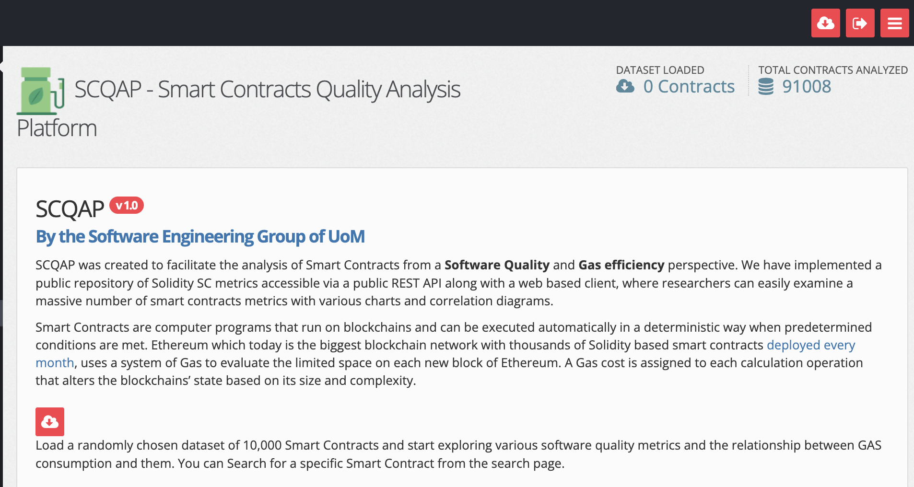
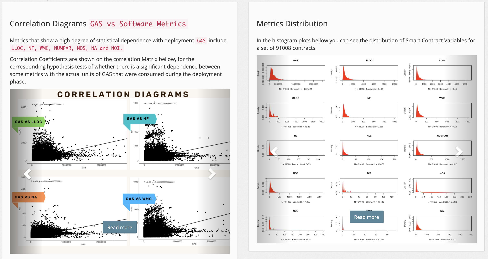
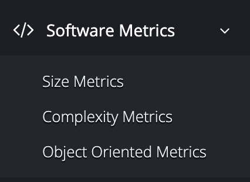
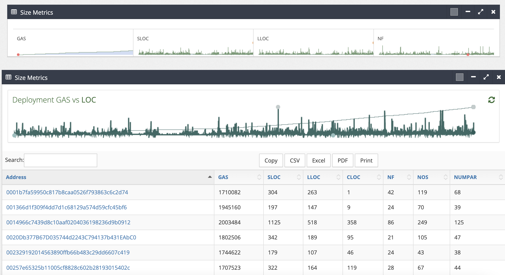
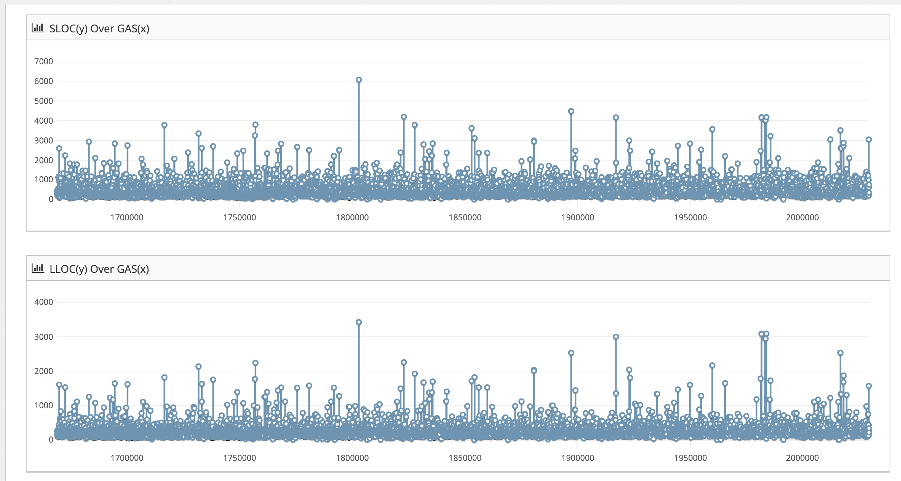

SCQAP: Smart Contract Quality Analysis Platform
SCQAP is an online platform for Smart Contracts Metrics Exploration, and also correlation analysis between software metrics and Gas consumption. It facilitates Smart Contracts analysis, organizes relevant information in comprehensible reports and provides a useful tool for empirical research.
Overview
The development of the platform was driven by the following key issues:
- The platform should be easy to use. To this end we opted for a Web based platform enabling users to analyze random SC datasets by a single click.
- Large variety of charts to easily examine software quality and complexity metrics against Gas values for randomly chosen datasets of SCs
- Fined-grained analysis of Smart Contracts code via links to Etherscan.io
- Any software system has several facets, so do SCs. Therefore, we offer multiple views concerning sizet-related metrics, complexity metrics and object-oriented metrics.
- All software metrics can be easily copied or extracted from UI options
- Empirical studies very often focus on the investigation of relations among variables. To satisfy this need we offer on demand correlation analysis between any two monitored variables. (for this reason the x-axis is common on all diagrams and represents software versions)
Homepage
The homepage of SCQAP awaits a single user click, to load a randomly chosen dataset for start exploring various SC facets:  The home page offers some usefull insights and reports for all dataset metrics (currently consisting of 91008 contracts). This includes a correlation matrix of all software metrics and the distribution of them as well as some interesting correlation scatter plots. 
Metrics
Detailed information concering the metrics of the loaded dataset for the three examined views (size, complexity and object-oriented) can be displayed by selecting “Metrics” on the left menu.

As an example, the overview of size metrics over a randomly loaded dataset are shown in graphs bellow. The results are also shown as Tables with columns corresponding to metrics, and rows to examined SCs. By clicking the corresponding button on every tabular representation, data can be copied or exported in CSV, Excel or PDF format to allow further experimentation. The available metrics of SCQAP are summarized in Table  The following charts contain on the x axis Gas values in anscending order and the corresponding size metrics on the y axis for every SC 